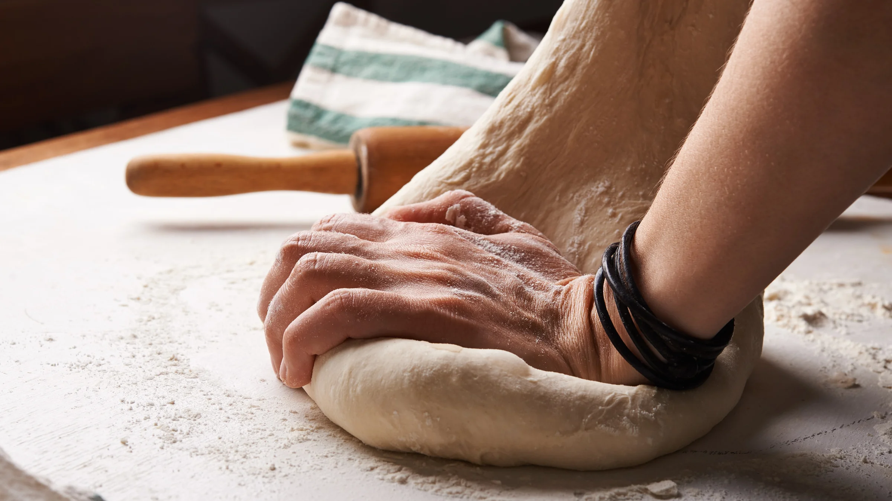

Recipease.
Home
Recipes
Tips and Tricks
About
References
Welcome to Recipease!
Find recipes that are 100% picky eater approved:)
→
BREADS
Monay
PIES
Egg Pie
Drinks
Hot mocha
PASTA
Truffle pasta
MAIN CATEGORIES
Breads
Cakes and Muffins
Pies
Meat and Poultry
Pasta
and more →

FEATURED ARTICLE
Breadmaking Tips
When making bread, you will definitely come across a plethora of problems that could make or break whatever your baking. Here are a couple tips and tricks to save you from a future bread mess-up!
Read more →